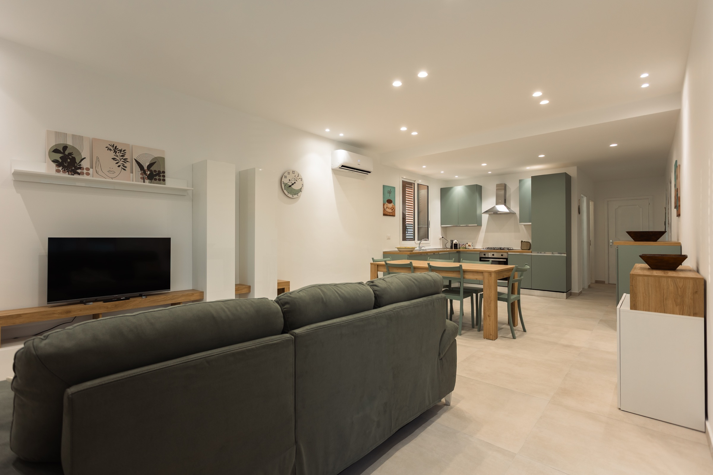
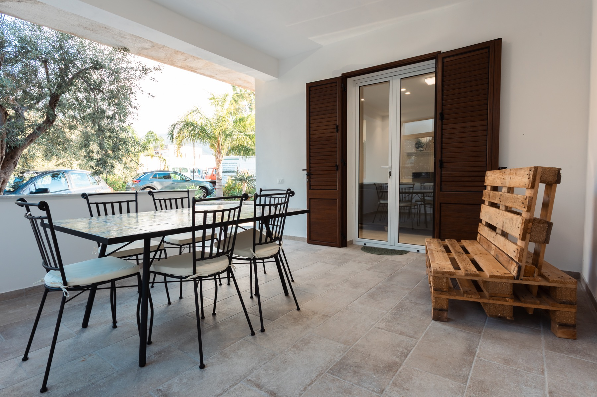
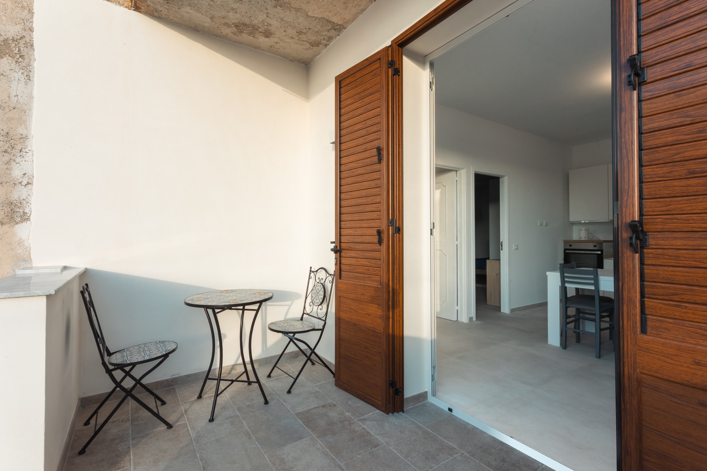
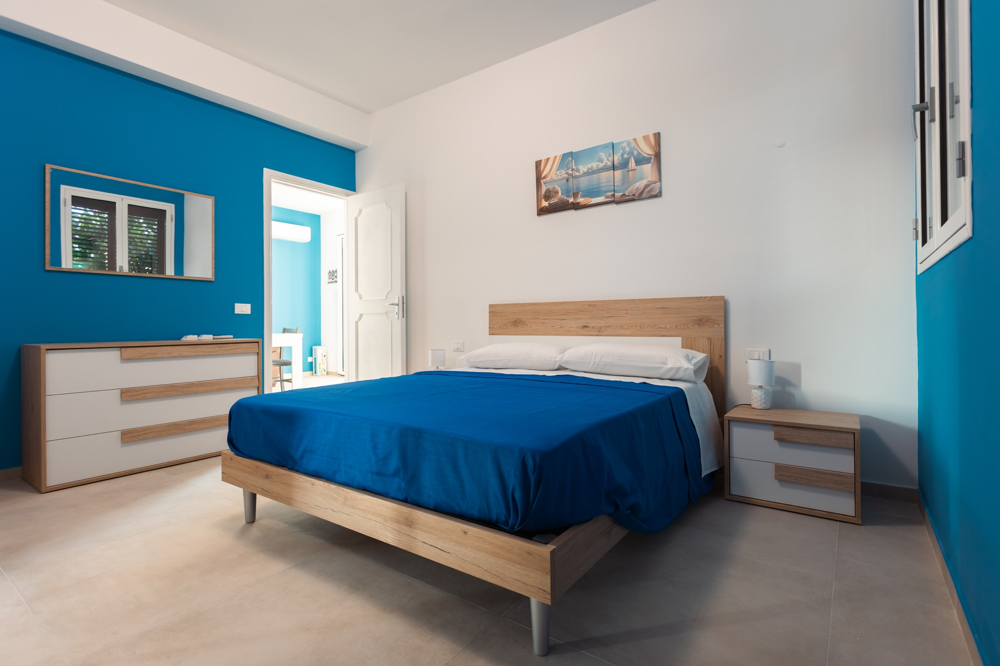
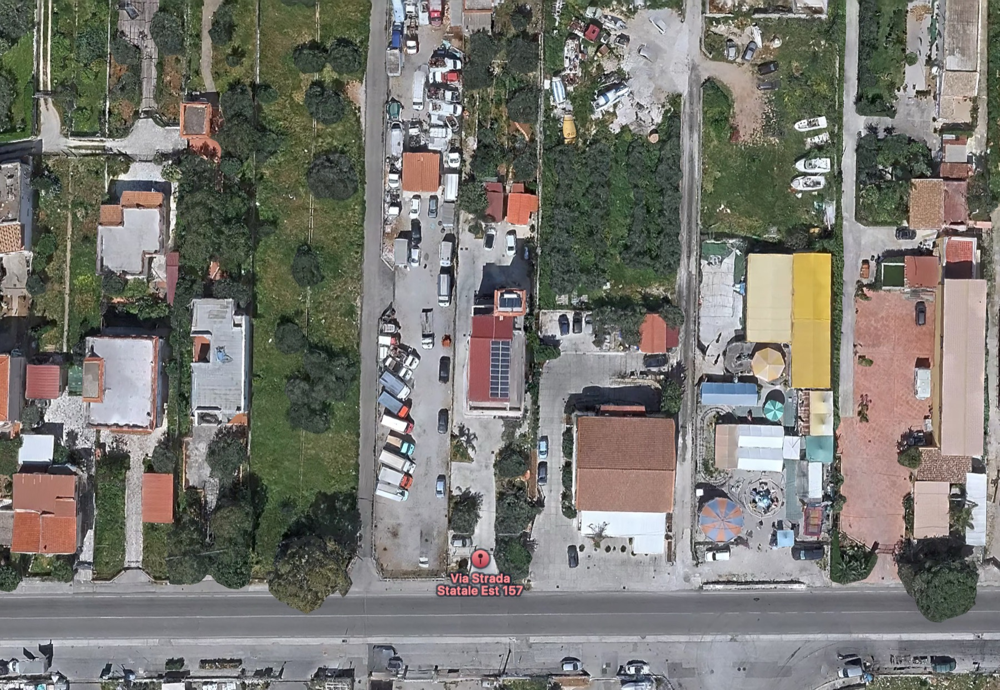

La soluzione più grande, ideale per famiglie e gruppi.
Fino a 6 ospiti con 3 camere, 2 letti matrimoniali, un divano letto e 2 bagni.
- Massimo 6 ospiti
- 3 camere
- 2 bagni
Tra Palermo e l'aeroporto Falcone Borsellino
CIN IT082021C23NRN5DBU - CIR 19082021C259979
Le due case
La Dimora di Icaro nasce per accogliere famiglie, coppie e piccoli gruppi con una sensazione semplice: arrivare, posare le valigie e trovare una casa vera, curata e pronta.
Fino a 6 ospiti con 3 camere, 2 letti matrimoniali, un divano letto e 2 bagni.
Fino a 4 ospiti con un letto matrimoniale, un divano letto e un bagno.





AeroportoPartenza dal Falcone Borsellino.
A29 verso PalermoPercorso diretto e rapido.
Uscita CariniEsci a Carini e prosegui verso la dimora.
La DimoraArrivo in Via Strada Statale Est, 157.
Dall'aeroporto Falcone Borsellino alla dimora in auto.
In auto, in base al traffico. In treno il centro di Palermo si raggiunge in circa 30 minuti.
La spiaggia di Villagrazia di Carini è vicina per giornate leggere al mare.
La stazione più vicina è raggiungibile anche a piedi.
Per visitare la Sicilia occidentale
Da Carini puoi organizzare giornate diverse senza cambiare alloggio: Palermo, mare, passeggiate in zona e rientro in una casa dove ritrovare calma e privacy.
Per arrivi e partenze
Se arrivi in Sicilia o devi ripartire presto, sei a circa 15 minuti dall'aeroporto. Check-in dalle 15:00, check-out entro le 10:00 e assistenza diretta con Rita o Giovanni.
Servizi inclusi
Wi-Fi, aria condizionata, TV, cucina attrezzata, lavatrice e phon.
Parcheggio, veranda esterna e spazio dedicato all'esterno per i cani ammessi.
Biancheria e asciugamani presenti, per viaggiare più leggeri.
"Una casa di famiglia, da vivere con rispetto e tranquillità."
OrariCheck-in dalle 15:00, check-out entro le 10:00.
RegoleNon è consentito fumare. Feste ed eventi non sono ammessi.
AnimaliSono ammessi solo cani, con spazio dedicato all'esterno.
ExtraTassa di soggiorno e cauzione verranno comunicate in fase di prenotazione.
Domande rapide
La Dimora Verde è più grande e ospita fino a 6 persone. La Dimora Blu è più raccolta e ospita fino a 4 persone.
L'aeroporto Falcone Borsellino dista circa 15 minuti in auto.
Sì, la stazione più vicina si trova a circa 600 metri dalla dimora.
Sì, sono ammessi solo cani e solo con apposito spazio dedicato all'esterno.
Prenota o chiedi informazioni
Scrivici per disponibilità, dettagli sulle due dimore e condizioni di soggiorno. Puoi contattarci direttamente o aprire i nostri canali ufficiali.
Scegli dove prenotare o scrivici direttamente.